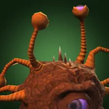

Alliance
Riftborn
A race alliance of 5 units with steps at 2 and 4.
Things that crawled out of the cracks in the spire. When a Riftborn unit dies it leaves behind a Rift Echo that fights on. Echoes are not Riftborn.
Riftborn is a race alliance carried by 5 units. It has 2 steps, reached with 2 and 4 different Riftborn units on your board. See How alliances count for how units are counted.
Steps
| Units needed | What it grants |
|---|---|
| 2 | When a Riftborn unit dies, it summons a Rift Echo in the nearest free cell. |
| 4 | When a Riftborn unit dies, it summons a Greater Rift Echo in the nearest free cell. |
- Only the highest step you have reached applies. Each step states its full effect; steps do not add together.
Units (5)
Tier 1: Common (1)
Tier 2: Uncommon (1)
Tier 3: Rare (1)
Tier 4: Epic (2)
Summoned units
The steps of this alliance call these units onto the board. See Summons and placeables.
| Units needed | Calls |
|---|---|
| 2 |  Rift Echo Rift Echo |
| 4 |  Greater Rift Echo |
Pairs well with
Every alliance that shares a unit with Riftborn is listed here. A shared unit counts toward both alliances at once, so fielding it moves both closer to a step. The Alliance matrix shows every overlap.
| Alliance | Kind | Shared units | Its steps | Units in both |
|---|---|---|---|---|
 Sundered Sundered | Class | 3 | 3 |  Hollow Singer Hollow Singer Hollow Strider Hollow Strider Veiled Seer Veiled Seer |
 Arcanist Arcanist | Class | 2 | 3 / 6 |  Rift MoteHollow Singer Rift MoteHollow Singer |
 Shade Shade | Class | 2 | 2 / 4 |  Riftlance DuelistHollow Strider Riftlance DuelistHollow Strider |
 Cutthroat Cutthroat | Class | 1 | 3 / 6 | Veiled Seer |
 Duelist Duelist | Class | 1 | 3 / 6 | Riftlance Duelist |
 Triad Triad | Race | 1 | 3 | Rift Mote |
How it counts
- Only units on your board count. Units on the bench do not.
- Each different unit counts once. Two copies of the same unit count as one, and star level makes no difference.
- Summoned units never count.
The full rules are on How alliances count.